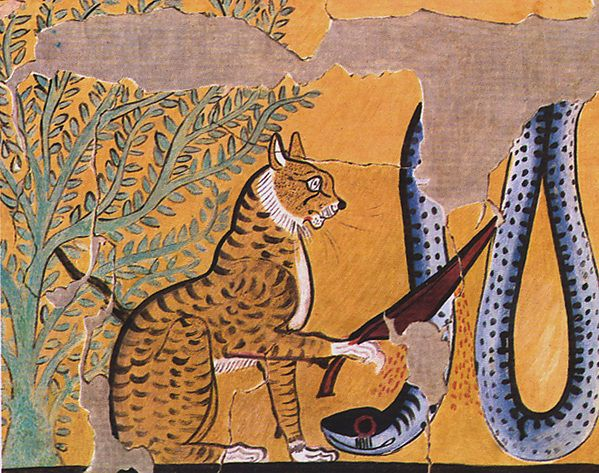

Newborn kittens are completely helpless and totally dependent on their mothers for nourishment, warmth and elimination. If they’re orphaned, they need 24/7 care from a kind human.
We Love Cats
Holy Meow! Our cat blog lets you dig your claws into the latest news, information, tips and blogger that are breaking in the world of cats. CatRules is always on the prowl for what cat lovers need to know to keep their cats healthy and happy.

What is Cat Therapy
Cat Therapy is a treatment for anxiety, stress and depression. It improves a person’s quality of life and creates a very special connection between the feline and its owner. In addition, according to several studies, people with heart issues gradually improve after living with a cat.
Purrr??
Cats are usually recommended for people who live alone, especially the elderly. Even people with dementia or Alzheimer’s sometimes recall memories when petting them. It’s great news: this can delay the neuronal degeneration of their disease. The purring of the animal stimulates certain fundamental nerve endings, which can help them to recall stories from the past.

A Brief History OF Cats
For hundreds of years cats were treated as evil creatures. It was believed they were the faithful companions of witches, carriers of bad luck and envoys of the devil. Their indomitable and unpredictable nature frightened both villagers and those in power. On the other hand, in some civilizations they were sacred. In Egypt they were venerated for being the protectors of their most important god: Ra. Legend says he was born and died with every rising and falling of the sun. As a result, at night he became easy prey for his enemies. The eyes of the felines, associated with the lion’s, reflected the sun’s rays to protect him in that period. Legends aside, it was quite remarkable that cats started to be accepted as pets. Unlike dogs, used as guardians of sheep and hunters, cats initially remained wild.
Let See A Cat Therapy
purrrr me
Live Long And Pross-Purr
During kittens’ first 12 weeks, they learn who’s safe and trustworthy, what’s good to eat and where the bathroom is. To become socialized and friendly toward people, this is the time for loving human hands to hold them, pet them, feed them and, once they start playing, have fun with them.
Why Do Cats Need Grooming ? Because They Wanna Be Purretty
For about the first 12 weeks, kittens become socialized toward other cats. They learn appropriate respect toward adult cats from their mothers and how to get along with their peers from their littermates. They learn things like where they stand in a hierarchy, to respect other cats’ territory and how to fight fair.
I'm Not Scared, I just Have A Purranoia
One of the most interesting kitten facts? Their eyes open with a bluish hue at about 2 weeks of age, and some breeds — like Siamese, Tonkinese and Ragdoll — keep their blue eye color. You might see a range of colors during the kitten’s first year before her eyes change into their permanent color.
What People Think About Cat
“Cats: Not just a broadway play... Cute animals that mostly aren't crazy about people..”
Harith Adam
“I ❤️ CATS BECAUSE THEY ARE SO FLUFFY.”
Muhammad Naim
“Mingled Respect & Hatred :)”
Ridwan 2 3
“Heartless & adorable." — "🌟 BUT HEARTLESS.”
Harith Iskandar
Love To See More About Cat
Visit This Amzing Cat Blogger
I have Cat, Single in the City, With Cats
Representing cat ladies from all around the world. This cat blog is one of our favorites due to the variety of well-written content. Tamar is one of the leading cat bloggers on the web. Aside from the cute cat pillows they sell, one can find interesting articles about all cat subject matter.
The Purrington Post
Led by the talented editor in chief the Purrington post is a fun, informative, humorous and often cheeky blog that celebrates cats of all types. Articles focus on cat behavior, cat lifestyle and inspiring feline stories. Coming mid-2017 they will be adding a new online store filled with unique and memorable kitty toys and accessories. Cat lovers will find this blog definitely worth following!
The Way of Cats Blog
Truly a cat blog worth mentioning. What started as a hobby for Pamela soon became AN incredible, many-layered, enterprise. The result? A great cat blog with loads of useful content. Make sure to check out the Cat Types section. Make sure to check out the Cat Types section. Way of Cats is a true inspiration for cat bloggers around the globe.
Love Meow Cat
In addition to their great website, Love Meow takes part in cat rescue events and community awareness. They also aid in finding homes for abandoned cats. We recommend taking a look at the video section.
Contact Us
-
Address:
Jalan Universiti Off, KM 12, Jalan Muar, Kemajuan Tanah Jementah Batu Sebelas, 85000 Segamat, Johor
-
Phone:
+60 016 9821826
-
Email:
catLovePurr@gmail.com